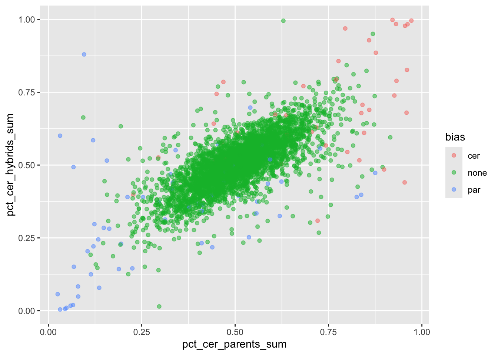
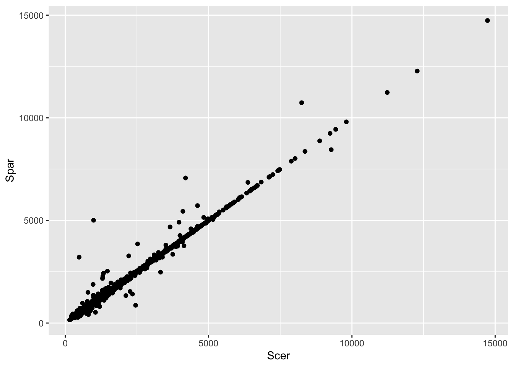
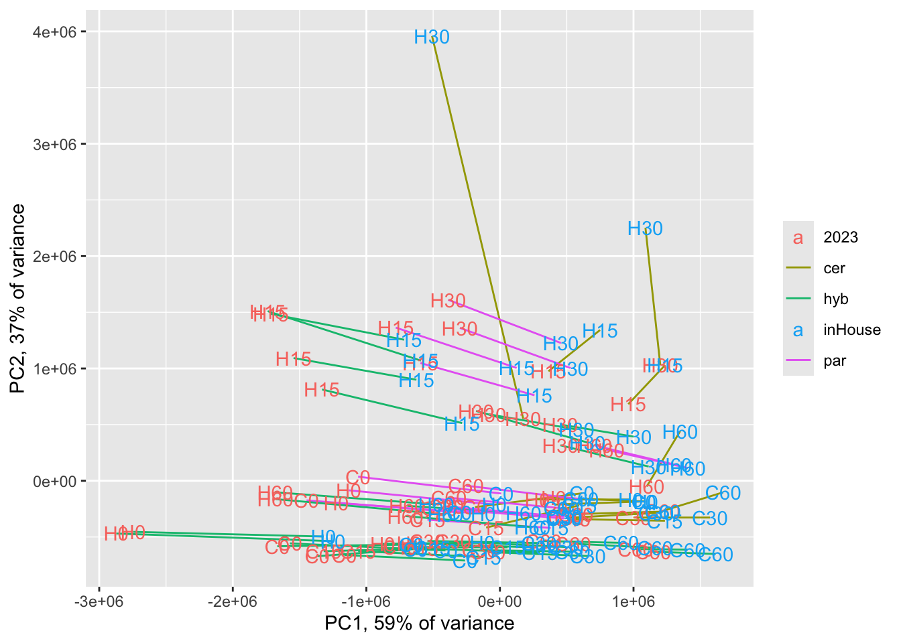

Clean Data
Reading in RNAseq counts and creating count matrix and sample info metadata
Working with RNAseq data published in Krieger et al. 2020 and Fay et al. 2023
## dplyr readr tidyr purrr ggplot2 ggpubr
## TRUE TRUE TRUE TRUE TRUE TRUE
## openxlsx matrixStats
## TRUE TRUECalculating % mapping to each allele for parents vs hybrids
This is a quality control step to check for counts mapping to the wrong allele in parental samples (i.e. counts from an Spar sample that map to the Scer genome). As all counts were mapped to a concatenated Scer/Spar genome, we can quantify the number of “wrong allele” counts per gene.
(Note: this can only be done on the tagseq samples, as Fay et al. 2023 pooled Scer and Spar parental samples)
Before we check percent mapping, we should filter out genes with very few reads total, as they’ll have highly variable percents based only on a few reads.
# normalizing function for filtering out lowly expressed
# genes prior to assessing mapping bias
# (used later to actually normalize count data)
# normalizing counts to adjust for differences in library size
# sums .cts_cer and .cts_par to get library size, only returns
# counts for specified allele
# @input: count matrix (genes are rows, columns are samples)
# @output: a count matrix normalzied for library size---integer counts in counts-per-million
countsPerMillionAllele <- function(.cts_cer, .cts_par, .allele) {
librarySizes <- colSums(.cts_cer, na.rm = TRUE) + colSums(.cts_par, na.rm = TRUE)
if (.allele == "cer") {
.cts <- .cts_cer
}
if (.allele == "par") {
.cts <- .cts_par
}
output <- apply(.cts, 1, function(x) {
normalized <- (x/librarySizes)*1e6
return(round(normalized))
})
return(t(output)) # For some unhinged reason, a vector output of apply across ROWS forms the COLUMNS of a new matrix
}
# tests for countsPerMillionAllele
test_cts <- tagseq_cer[,-1]
test_rowIdx <- sample(c(1:nrow(test_cts)), 1)
test_colIdx <- sample(which(grepl("cer", colnames(test_cts))), 1)
test_count <- test_cts[test_rowIdx, test_colIdx]
test_cpm <- countsPerMillionAllele(.cts_cer = tagseq_cer[,-1],
.cts_par = tagseq_par[,-1],
.allele = "cer")
((test_count/(colSums(tagseq_cer[,-1], na.rm = TRUE) +
colSums(tagseq_par[,-1], na.rm = TRUE))[test_colIdx])*1e6) %>%
round() # what it should be## WT_TP1_cer_C3_D3_G6_GS7
## 1 11test_cts[test_rowIdx, test_colIdx] # what it is before using our function## # A tibble: 1 × 1
## WT_TP1_cer_C3_D3_G6_GS7
## <dbl>
## 1 11test_cpm[test_rowIdx, test_colIdx] # what it is using our function## WT_TP1_cer_C3_D3_G6_GS7
## 11Now we can calculate percent reads mapping to each allele in parental samples
# 1) normalize to counts per million based on total
# library size: cer reads + par reads regardless of sample organism
cpm_cer <- countsPerMillionAllele(.cts_cer = tagseq_cer[,-1],
.cts_par = tagseq_par[,-1],
.allele = "cer")
cpm_par <- countsPerMillionAllele(.cts_cer = tagseq_cer[,-1],
.cts_par = tagseq_par[,-1],
.allele = "par")
# 2) filter lowly expressed: < 30 cpm
sum(cpm_cer == 0 & cpm_par == 0)## [1] 218821isHighExpr <- (rowMeans(cpm_cer + cpm_par) > 30) |> sapply(FUN = isTRUE)
keep_genes <- common_genes[isHighExpr]
cpm_cer <- cpm_cer[isHighExpr,]
cpm_par <- cpm_par[isHighExpr,]
sum(cpm_cer == 0 & cpm_par == 0) # note there are still individual samples with zero counts## [1] 48907# 3) check % cer of all high-enough expressed genes is close to 1 for cer samples and 0 for par samples
plotdf <- bind_rows(bind_cols(tibble(gene = keep_genes,
allele = "cer"), cpm_cer),
bind_cols(tibble(gene = keep_genes,
allele = "par"), cpm_par)) |>
pivot_longer(cols = colnames(tagseq_cer[,-c(1,2)]),
names_to = c("sample_name"),
values_to = "count") |>
pivot_wider(id_cols = c("sample_name", "gene"),
values_from = "count", names_from = "allele",
names_prefix = "counts_")
plotdf$organism <- if_else(grepl("_cer_", plotdf$sample_name),
true = "cerSample",
false = if_else(grepl("_par_", plotdf$sample_name),
true = "parSample",
false = "hybSample"))
# Calculating % of reads mapping to the Scer allele
# for each gene/sample
# (So % Spar is 1 - % Scer)
plotdf$pct_cer <- if_else(plotdf$counts_cer == 0 &
plotdf$counts_par == 0,
true = NA,
false = plotdf$counts_cer/(plotdf$counts_cer + plotdf$counts_par))
plotdf <- drop_na(plotdf)
sample_genes <- sample(plotdf$gene, size = 100)
ggplot(filter(plotdf, gene %in% sample_genes),
aes(x = gene, y = pct_cer)) +
geom_point(aes(color = organism))
Do any Scer/Spar samples have many incorrect gene mappings?
sampdf <- plotdf |> filter(organism %in% c("cerSample", "parSample")) |>
group_by(sample_name, organism) |>
summarise(avg_pct_cer = mean(pct_cer, na.rm = TRUE))## `summarise()` has grouped output by 'sample_name'. You can override
## using the `.groups` argument.sampdf |> filter(organism == "cerSample") |> arrange(avg_pct_cer)## # A tibble: 220 × 3
## # Groups: sample_name [220]
## sample_name organism avg_pct_cer
## <chr> <chr> <dbl>
## 1 WT_39_cer_CellCycle_rep2 cerSample 0.522
## 2 WT_28_cer_CellCycle_rep2 cerSample 0.680
## 3 WT_12_cer_CellCycle_rep1 cerSample 0.824
## 4 WT_11_cer_HAP4andWTonYPD cerSample 0.882
## 5 WT_13_cer_HAP4andWTonYPD cerSample 0.884
## 6 WT_15_cer_HAP4andWTonYPD cerSample 0.887
## 7 WT_TP1_cer_C3_D3_G6_GS7 cerSample 0.897
## 8 WT_TP1_cer_C3_F5_G12_GS7 cerSample 0.901
## 9 WT_9_cer_HAP4andWTonYPD cerSample 0.908
## 10 WT_41_cer_CellCycle_rep1 cerSample 0.908
## # ℹ 210 more rowssampdf |> filter(organism == "parSample") |> arrange(desc(avg_pct_cer))## # A tibble: 230 × 3
## # Groups: sample_name [230]
## sample_name organism avg_pct_cer
## <chr> <chr> <dbl>
## 1 WT_34_par_CellCycle_rep2 parSample 0.312
## 2 WT_15_par_HAP4andWTonYPD parSample 0.164
## 3 WT_TP1_par_remnants2_D5_G6_GS7 parSample 0.124
## 4 WT_29_par_SCtoLowPi_rep1 parSample 0.118
## 5 WT_4_par_SCtoLowPi_rep1 parSample 0.116
## 6 WT_17_par_SCtoLowPi_rep2 parSample 0.110
## 7 WT_8_par_SCtoLowPi_rep1 parSample 0.105
## 8 WT_16_par_SCtoLowPi_rep1 parSample 0.101
## 9 WT_6_par_HAP4andWTonYPD parSample 0.0967
## 10 WT_1_par_HAP4andWTonYPD parSample 0.0946
## # ℹ 220 more rowsggplot(sampdf, aes(x = avg_pct_cer)) +
geom_density(aes(fill = organism)) +
geom_vline(xintercept = 0.75) +
geom_vline(xintercept = 0.25)
filter(sampdf, (organism == "cerSample" & round(avg_pct_cer, digits = 1) < 0.8) |
(organism == "parSample" & round(avg_pct_cer, digits = 1) > 0.2)) |>
arrange(organism, desc(avg_pct_cer))## # A tibble: 3 × 3
## # Groups: sample_name [3]
## sample_name organism avg_pct_cer
## <chr> <chr> <dbl>
## 1 WT_28_cer_CellCycle_rep2 cerSample 0.680
## 2 WT_39_cer_CellCycle_rep2 cerSample 0.522
## 3 WT_34_par_CellCycle_rep2 parSample 0.312biased_samples <- filter(sampdf, (organism == "cerSample" & round(avg_pct_cer, digits = 1) < 0.9) |
(organism == "parSample" & round(avg_pct_cer, digits = 1) > 0.1)) |>
select(sample_name) |> pull()
biased_samples## [1] "WT_12_cer_CellCycle_rep1" "WT_15_par_HAP4andWTonYPD"
## [3] "WT_28_cer_CellCycle_rep2" "WT_34_par_CellCycle_rep2"
## [5] "WT_39_cer_CellCycle_rep2"# do these samples have small library sizes?
bad_libsizes <- colSums(tagseq_cer[,biased_samples] + tagseq_par[,biased_samples])
bad_libsizes |> sort()## WT_28_cer_CellCycle_rep2 WT_34_par_CellCycle_rep2
## 10380 15235
## WT_12_cer_CellCycle_rep1 WT_15_par_HAP4andWTonYPD
## 27944 365274
## WT_39_cer_CellCycle_rep2
## 584945hist(colSums(tagseq_cer[,-1] + tagseq_par[,-1]), breaks = 50)
abline(v = bad_libsizes, col = "red")
Do any genes have consistently biased mappings? These might be genes with above-average seq conservation btwn Scer and Spar and therefore shouldn’t be used for allele-specific comparisons in the hybrid
cer_genedf <- plotdf |> filter(organism == "cerSample" & !(sample_name %in% biased_samples)) |>
group_by(gene) |>
summarise(avg_pct_cer = mean(pct_cer, na.rm = TRUE))
hist(cer_genedf$avg_pct_cer, breaks = 50)
abline(v = 0.9, col = "red")par_genedf <- plotdf |> filter(organism == "parSample" &
!(sample_name %in% biased_samples)) |>
group_by(gene) |>
summarise(avg_pct_cer = mean(pct_cer, na.rm = TRUE))
hist(par_genedf$avg_pct_cer, breaks = 50)
abline(v = 0.1, col = "red")
cer_biased_genes <- par_genedf |> filter(avg_pct_cer > 0.1) |> select(gene) |> pull()
par_biased_genes <- cer_genedf |> filter(avg_pct_cer < 0.9) |> select(gene) |> pull()
both_biased_genes <- intersect(cer_biased_genes, par_biased_genes)
cer_biased_genes <- setdiff(cer_biased_genes, par_biased_genes)
par_biased_genes <- setdiff(par_biased_genes, cer_biased_genes)
# any common genes of note?
sgd_lookup <- read_tsv("data_files/downloaded_genomes_and_features/SGD_features.tab",
col_names = FALSE) |>
select(X4, X5) |> unique() |> drop_na()## Rows: 16454 Columns: 16
## ── Column specification ────────────────────────────────────────────────
## Delimiter: "\t"
## chr (12): X1, X2, X3, X4, X5, X6, X7, X8, X9, X12, X15, X16
## dbl (3): X10, X11, X13
## date (1): X14
##
## ℹ Use `spec()` to retrieve the full column specification for this data.
## ℹ Specify the column types or set `show_col_types = FALSE` to quiet this message.# cer biased
sgd_lookup[sgd_lookup$X4 %in% cer_biased_genes,] |>
print(n = length(cer_biased_genes))## # A tibble: 39 × 2
## X4 X5
## <chr> <chr>
## 1 YAL067C SEO1
## 2 YAL054C ACS1
## 3 YAR035W YAT1
## 4 YKL218C SRY1
## 5 YKR039W GAP1
## 6 YLR270W DCS1
## 7 YLR337C VRP1
## 8 YML123C PHO84
## 9 YMR133W REC114
## 10 YMR175W SIP18
## 11 YNL142W MEP2
## 12 YOL158C ENB1
## 13 YOR161C PNS1
## 14 YOR173W DCS2
## 15 YPL274W SAM3
## 16 YPL223C GRE1
## 17 YPR006C ICL2
## 18 YPR194C OPT2
## 19 YBR072W HSP26
## 20 YBR093C PHO5
## 21 YBR132C AGP2
## 22 YCR010C ADY2
## 23 YCR030C SYP1
## 24 YDR110W FOB1
## 25 YDR213W UPC2
## 26 YDR254W CHL4
## 27 YER046W SPO73
## 28 YER065C ICL1
## 29 YFL030W AGX1
## 30 YFL014W HSP12
## 31 YGL222C EDC1
## 32 YGL208W SIP2
## 33 YGL096W TOS8
## 34 YGR236C SPG1
## 35 YHR096C HXT5
## 36 YHR136C SPL2
## 37 YIL121W QDR2
## 38 YIL111W COX5B
## 39 YIL057C RGI2par_genedf |> filter(gene %in% cer_biased_genes) |>
arrange(desc(avg_pct_cer)) |>
print(n = length(cer_biased_genes))## # A tibble: 45 × 2
## gene avg_pct_cer
## <chr> <dbl>
## 1 YAR071W/YHR215W 0.785
## 2 YNL142W 0.775
## 3 YLR337C 0.458
## 4 YDR213W 0.443
## 5 YPL274W 0.419
## 6 YOL158C 0.360
## 7 YCR030C 0.295
## 8 YMR175W 0.286
## 9 YAL067C 0.282
## 10 YDR110W 0.249
## 11 YLR270W 0.247
## 12 YIL057C 0.247
## 13 YMR133W 0.241
## 14 YHR136C 0.238
## 15 YPR006C 0.217
## 16 YHR096C 0.214
## 17 YIL121W 0.201
## 18 YGR236C 0.191
## 19 YAL054C 0.181
## 20 YBR132C 0.181
## 21 YCR010C 0.181
## 22 YIL111W 0.180
## 23 YPR194C 0.175
## 24 YIL014C-A 0.170
## 25 YBR285W 0.149
## 26 YDR343C/YDR342C 0.145
## 27 YFL014W 0.143
## 28 YAR035W 0.133
## 29 YPL223C 0.132
## 30 YKR039W 0.128
## 31 YDR254W 0.124
## 32 YGL096W 0.123
## 33 YJR096W 0.121
## 34 YBR093C 0.121
## 35 YFL030W 0.120
## 36 YGL208W 0.118
## 37 YBR072W 0.117
## 38 YOR161C 0.115
## 39 YGL222C 0.115
## 40 YKL218C 0.113
## 41 YER065C 0.113
## 42 YOR173W 0.106
## 43 YER046W 0.106
## 44 YHR033W 0.102
## 45 YML123C 0.102# par biased
sgd_lookup[sgd_lookup$X4 %in% par_biased_genes,] |>
print(n = length(par_biased_genes))## # A tibble: 53 × 2
## X4 X5
## <chr> <chr>
## 1 YAL063C FLO9
## 2 YAR050W FLO1
## 3 YJL153C INO1
## 4 YJL088W ARG3
## 5 YJL052W TDH1
## 6 YJR010W MET3
## 7 YJR048W CYC1
## 8 YJR095W SFC1
## 9 YKR046C PET10
## 10 YKR097W PCK1
## 11 YLL057C JLP1
## 12 YLL055W YCT1
## 13 YLR174W IDP2
## 14 YLR205C HMX1
## 15 YLR411W CTR3
## 16 YML043C RRN11
## 17 YMR095C SNO1
## 18 YMR107W SPG4
## 19 YMR169C ALD3
## 20 YMR303C ADH2
## 21 YNL117W MLS1
## 22 YOL155C HPF1
## 23 YOL152W FRE7
## 24 YOL058W ARG1
## 25 YOL052C-A DDR2
## 26 YOR348C PUT4
## 27 YPL171C OYE3
## 28 YPL014W CIP1
## 29 YPR193C HPA2
## 30 YBR294W SUL1
## 31 YCL018W LEU2
## 32 YCR098C GIT1
## 33 YDL227C HO
## 34 YDL037C BSC1
## 35 YDR363W ESC2
## 36 YEL060C PRB1
## 37 YEL022W GEA2
## 38 YEL021W URA3
## 39 YEL020C PXP1
## 40 YER011W TIR1
## 41 YFR053C HXK1
## 42 YGL255W ZRT1
## 43 YGL184C STR3
## 44 YGL107C RMD9
## 45 YGR142W BTN2
## 46 YGR183C QCR9
## 47 YGR213C RTA1
## 48 YHR203C RPS4B
## 49 YIL169C CSS1
## 50 YIL164C NIT1
## 51 YIR017C MET28
## 52 YIR019C FLO11
## 53 YIR028W DAL4cer_genedf |> filter(gene %in% par_biased_genes) |>
arrange(avg_pct_cer) |>
print(n = length(par_biased_genes))## # A tibble: 59 × 2
## gene avg_pct_cer
## <chr> <dbl>
## 1 YFL051C 0.111
## 2 YOL152W 0.122
## 3 YDL037C 0.125
## 4 YIL164C 0.239
## 5 YEL021W 0.244
## 6 YIL169C 0.365
## 7 YGL107C 0.372
## 8 YDR363W 0.505
## 9 YIR019C 0.556
## 10 YLR411W 0.567
## 11 YEL022W 0.663
## 12 YGR213C 0.719
## 13 YCL018W 0.729
## 14 YDL227C 0.738
## 15 YAL063C 0.754
## 16 YLR307C-A 0.764
## 17 YGR183C 0.768
## 18 YPR193C 0.809
## 19 YEL020C 0.818
## 20 YJL052W 0.822
## 21 YNL117W 0.824
## 22 YBR294W 0.836
## 23 YPL014W 0.843
## 24 YCL048W-A 0.851
## 25 YMR095C 0.853
## 26 YLL056C 0.854
## 27 YOL155C 0.855
## 28 YAR050W 0.860
## 29 YJL088W 0.861
## 30 YLL057C 0.867
## 31 YLR205C 0.867
## 32 YGL255W 0.869
## 33 YOL058W 0.870
## 34 YMR169C 0.870
## 35 YKR097W 0.871
## 36 YIR028W 0.873
## 37 YHR203C 0.875
## 38 YEL060C 0.877
## 39 YKL071W 0.877
## 40 YJR048W 0.878
## 41 YER011W 0.882
## 42 YLL055W 0.884
## 43 YGR142W 0.885
## 44 YJL153C 0.887
## 45 YPL171C 0.888
## 46 YMR303C 0.888
## 47 YKR046C 0.889
## 48 YOR348C 0.894
## 49 YIR017C 0.894
## 50 YGL184C 0.895
## 51 YOL052C-A 0.896
## 52 YJR095W 0.896
## 53 YJR010W 0.896
## 54 YML043C 0.897
## 55 YFR053C 0.897
## 56 YLR174W 0.899
## 57 YLR046C 0.899
## 58 YCR098C 0.900
## 59 YMR107W 0.900# both
sgd_lookup[sgd_lookup$X4 %in% both_biased_genes,] |>
print(n = length(both_biased_genes))## # A tibble: 4 × 2
## X4 X5
## <chr> <chr>
## 1 YJL052W TDH1
## 2 YMR107W SPG4
## 3 YOL052C-A DDR2
## 4 YDR363W ESC2cer_genedf |> filter(gene %in% both_biased_genes) |>
arrange(avg_pct_cer)## # A tibble: 5 × 2
## gene avg_pct_cer
## <chr> <dbl>
## 1 YDR363W 0.505
## 2 YJL052W 0.822
## 3 YCL048W-A 0.851
## 4 YOL052C-A 0.896
## 5 YMR107W 0.900par_genedf |> filter(gene %in% both_biased_genes) |>
arrange(desc(avg_pct_cer))## # A tibble: 5 × 2
## gene avg_pct_cer
## <chr> <dbl>
## 1 YDR363W 0.255
## 2 YOL052C-A 0.169
## 3 YMR107W 0.167
## 4 YCL048W-A 0.165
## 5 YJL052W 0.119# Are these genes on the low expr end?
cer_genedf <- left_join(cer_genedf, tibble(gene = common_genes[isHighExpr],
mean_expr = rowMeans(cpm_cer[,grepl("cer", colnames(cpm_cer))] +
cpm_par[,grepl("cer", colnames(cpm_cer))])),
by = "gene")
p_parbias <- ggplot(cer_genedf, aes(x = log2(mean_expr), y = avg_pct_cer)) +
geom_point(aes(color = avg_pct_cer < 0.9)) +
ylab("% reads mapping to Scer allele")
par_genedf <- left_join(par_genedf, tibble(gene = common_genes[isHighExpr],
mean_expr = rowMeans(cpm_cer[,grepl("par", colnames(cpm_cer))] +
cpm_par[,grepl("par", colnames(cpm_cer))])),
by = "gene")
p_cerbias <- ggplot(par_genedf, aes(x = log2(mean_expr), y = avg_pct_cer)) +
geom_point(aes(color = avg_pct_cer > 0.1)) +
ylab("% reads mapping to Scer allele")
ggarrange(p_parbias, p_cerbias, nrow = 1, ncol = 2)
Lastly we’ll check if cer/par ratio of parents matches hybrids for each gene across samples
plotdf$bias <- if_else(plotdf$gene %in% cer_biased_genes,
true = "cer",
false = if_else(plotdf$gene %in% par_biased_genes,
true = "par", false = "none"))
plotdf_vshyb <- plotdf |> group_by(gene, organism, bias) |>
summarise(mean_counts_cer = mean(counts_cer, na.rm = TRUE),
mean_counts_par = mean(counts_par, na.rm = TRUE)) |>
drop_na() |>
pivot_wider(id_cols = c("gene", "bias"),
values_from = c("mean_counts_cer", "mean_counts_par"),
names_from = organism)## `summarise()` has grouped output by 'gene', 'organism'. You can
## override using the `.groups` argument.# two ways to calculate read counts for each gene in the parents:
# 1) sum the hits for the cer allele and the par allele (after all we know that all these reads came from one allele or the other)
# 2) only count the hits for the correct parent's allele
# in the hybrid, we no longer know which allele is correct, because both alleles are present.
# So we can only count them one way. If we see a difference in how
# correlated the parental vs hybrid %cer values between the
# two methods of parental read counting, mapping bias
plotdf_vshyb$par_sum <- plotdf_vshyb$mean_counts_cer_parSample + plotdf_vshyb$mean_counts_par_parSample
plotdf_vshyb$cer_sum <- plotdf_vshyb$mean_counts_cer_cerSample + plotdf_vshyb$mean_counts_par_cerSample
plotdf_vshyb$pct_cer_parents_sum <- plotdf_vshyb$cer_sum/(plotdf_vshyb$par_sum + plotdf_vshyb$cer_sum)
plotdf_vshyb$pct_cer_parents_singleAllele <- plotdf_vshyb$mean_counts_cer_cerSample/(plotdf_vshyb$mean_counts_cer_cerSample + plotdf_vshyb$mean_counts_par_parSample)
plotdf_vshyb$pct_cer_hybrids_sum <- plotdf_vshyb$mean_counts_cer_hybSample/(plotdf_vshyb$mean_counts_cer_hybSample + plotdf_vshyb$mean_counts_par_hybSample)
# summing parental allele reads
ggplot(plotdf_vshyb, aes(x = pct_cer_parents_sum, y = pct_cer_hybrids_sum)) +
geom_point(aes(color = bias), alpha = 0.5)
ggplot(filter(plotdf_vshyb, bias != "none"), aes(x = pct_cer_parents_sum, y = pct_cer_hybrids_sum)) +
geom_point(aes(color = bias), alpha = 0.5)# single parental allele reads
ggplot(plotdf_vshyb, aes(x = pct_cer_parents_singleAllele, y = pct_cer_hybrids_sum)) +
geom_point(aes(color = bias), alpha = 0.5)
ggplot(filter(plotdf_vshyb, bias != "none"), aes(x = pct_cer_parents_singleAllele, y = pct_cer_hybrids_sum)) +
geom_point(aes(color = bias), alpha = 0.5) Conclusion: slight differences in the counts of biased genes, no visible
difference in the counts of unbiased genes. We can count just reads
mapping to correct parent allele and remove any biased genes after
adding Fay et al. 2023 samples and filtering for low expression.
Conclusion: slight differences in the counts of biased genes, no visible
difference in the counts of unbiased genes. We can count just reads
mapping to correct parent allele and remove any biased genes after
adding Fay et al. 2023 samples and filtering for low expression.
Here are our lists of based genes/samples:
cer_biased_genes## [1] "YAL054C" "YAL067C" "YAR035W"
## [4] "YAR071W/YHR215W" "YBR072W" "YBR093C"
## [7] "YBR132C" "YBR285W" "YCR010C"
## [10] "YCR030C" "YDR110W" "YDR213W"
## [13] "YDR254W" "YDR343C/YDR342C" "YER046W"
## [16] "YER065C" "YFL014W" "YFL030W"
## [19] "YGL096W" "YGL208W" "YGL222C"
## [22] "YGR236C" "YHR033W" "YHR096C"
## [25] "YHR136C" "YIL014C-A" "YIL057C"
## [28] "YIL111W" "YIL121W" "YJR096W"
## [31] "YKL218C" "YKR039W" "YLR270W"
## [34] "YLR337C" "YML123C" "YMR133W"
## [37] "YMR175W" "YNL142W" "YOL158C"
## [40] "YOR161C" "YOR173W" "YPL223C"
## [43] "YPL274W" "YPR006C" "YPR194C"par_biased_genes## [1] "YAL063C" "YAR050W" "YBR294W" "YCL018W" "YCL048W-A"
## [6] "YCR098C" "YDL037C" "YDL227C" "YDR363W" "YEL020C"
## [11] "YEL021W" "YEL022W" "YEL060C" "YER011W" "YFL051C"
## [16] "YFR053C" "YGL107C" "YGL184C" "YGL255W" "YGR142W"
## [21] "YGR183C" "YGR213C" "YHR203C" "YIL164C" "YIL169C"
## [26] "YIR017C" "YIR019C" "YIR028W" "YJL052W" "YJL088W"
## [31] "YJL153C" "YJR010W" "YJR048W" "YJR095W" "YKL071W"
## [36] "YKR046C" "YKR097W" "YLL055W" "YLL056C" "YLL057C"
## [41] "YLR046C" "YLR174W" "YLR205C" "YLR307C-A" "YLR411W"
## [46] "YML043C" "YMR095C" "YMR107W" "YMR169C" "YMR303C"
## [51] "YNL117W" "YOL052C-A" "YOL058W" "YOL152W" "YOL155C"
## [56] "YOR348C" "YPL014W" "YPL171C" "YPR193C"both_biased_genes## [1] "YCL048W-A" "YDR363W" "YJL052W" "YMR107W" "YOL052C-A"biased_samples## [1] "WT_12_cer_CellCycle_rep1" "WT_15_par_HAP4andWTonYPD"
## [3] "WT_28_cer_CellCycle_rep2" "WT_34_par_CellCycle_rep2"
## [5] "WT_39_cer_CellCycle_rep2"Reading in Fay et al. 2023 RNAseq data and R1/R2 QC
fay_filenames <- gsub("_ReadsPerGene.out.tab", "",
list.files("data_files/fay_counts/",
full.names = FALSE))
fay <- list.files("data_files/fay_counts/", full.names = TRUE) |>
map(read_table, col_names = FALSE, show_col_types = FALSE) |>
map2(.y = fay_filenames,
.f = \(x, y) {
if (grepl("R1", y)) {
output <- select(x, X1, X2)
return(output)}
if (grepl("R2", y)) {
output <- select(x, X1, X3)
return(output)}
}) |> # X1 are gene names, X2 is sense strand read count for R1, X3 is the sense strand for R2
purrr::reduce(.f = \(x, y) full_join(x = x, y = y, by = "X1"))
colnames(fay) <- c("gene", fay_filenames)
QCdf_fay <- fay[grepl("N_", fay$gene), ]
fay <- fay[!grepl("N_", fay$gene),]
fay <- fay[!fay$gene %in% c("cer_NA", "par_NA"),]
fay_cer <- fay[grepl("^cer_", fay$gene),]
fay_par <- fay[grepl("^par_", fay$gene),]
common_genes_fay <- intersect(gsub("^cer_", "", fay_cer$gene),
gsub("^par_", "", fay_par$gene))
setequal(common_genes, common_genes_fay) # should be the same set of genes as tagseq## [1] TRUErm(common_genes_fay)
fay_cer$gene <- gsub("^cer_", "", fay_cer$gene)
fay_par$gene <- gsub("^par_", "", fay_par$gene)
fay_cer <- fay_cer[sapply(common_genes, \(x) which(x == fay_cer$gene)),]
fay_par <- fay_par[sapply(common_genes, \(x) which(x == fay_par$gene)),]
sum(fay_cer$gene == fay_par$gene)## [1] 5359Read counts from this dataset are paired end, but R1 and R2 were quantified separately because STAR wasn’t pairing the correct reads with each other and R1 and R2 had unique mappings when mapped as single-end, so it didn’t seem worth it to troubleshoot. But we do have to make sure that R1 and R2 have approximately the same counts for each gene:
# 1) Are library sizes for R1 and R2 of each sample in each allele
# about equal? And similar to the Fay et al. 2023 alignment counts?
sampdf <- bind_rows(tibble(sample_name = colnames(fay_cer[,-1]),
lib_size = colSums(fay_cer[,-1]),
allele = "cerAllele"),
tibble(sample_name = colnames(fay_par[,-1]),
lib_size = colSums(fay_par[,-1]),
allele = "parAllele"))
sampdf$read <- gsub("S[0-9]{1,2}_", "", sampdf$sample_name)
sampdf$sample_name <- gsub("_R[12]", "", sampdf$sample_name)
ggplot(pivot_wider(sampdf, id_cols = c("sample_name", "allele"),
names_from = "read", values_from = "lib_size"),
aes(x = R1, y = R2)) +
geom_point(aes(color = allele))
# good agreement in libsize between reads.
# Scer samples have a narrower libsize range though
# was this also seen in Fay alignment?
fay_sampdf <- read.xlsx("data_files/downloaded_from_Fay2023/Supporting_Tables.xlsx",
sheet = 4, startRow = 2, colNames = TRUE)
sampdf <- fay_sampdf |>
select(Sample, Sc_gene_reads, Sp_gene_reads) |>
pivot_longer(cols = c("Sc_gene_reads", "Sp_gene_reads"),
names_to = "allele", values_to = "lib_size_fay") |>
mutate(allele = if_else(allele == "Sc_gene_reads",
true = "cerAllele",
false = "parAllele")) |>
dplyr::rename("sample_name" = "Sample") |>
right_join(sampdf, by = c("sample_name", "allele"))
ggplot(sampdf, aes(x = lib_size_fay, y = lib_size)) +
geom_point(aes(color = allele, shape = read)) +
geom_abline(slope = 1, intercept = 0)
# highly correlated with fay alignment, R^2 > 0.99
lm(lib_size ~ lib_size_fay, data = sampdf) |> summary()##
## Call:
## lm(formula = lib_size ~ lib_size_fay, data = sampdf)
##
## Residuals:
## Min 1Q Median 3Q Max
## -303731 -26844 13243 30535 367888
##
## Coefficients:
## Estimate Std. Error t value Pr(>|t|)
## (Intercept) -1.615e+04 9.355e+03 -1.727 0.0867 .
## lib_size_fay 8.553e-01 3.168e-03 269.985 <2e-16 ***
## ---
## Signif. codes: 0 '***' 0.001 '**' 0.01 '*' 0.05 '.' 0.1 ' ' 1
##
## Residual standard error: 77290 on 126 degrees of freedom
## Multiple R-squared: 0.9983, Adjusted R-squared: 0.9983
## F-statistic: 7.289e+04 on 1 and 126 DF, p-value: < 2.2e-16# 2) Are read counts for each gene in each allele about equal between
# R1 and R2?
R1R2df <- expand_grid(sample_name = unique(sampdf$sample_name),
allele = c("cerAllele", "parAllele"))
R1R2df$cor <- map2(R1R2df$sample_name, R1R2df$allele,
\(s, a) {
if (a == "cerAllele") {
R1_reads <- fay_cer[,paste0(s, "_R1")]
R2_reads <- fay_cer[,paste0(s, "_R2")]
}
if (a == "parAllele") {
R1_reads <- fay_par[,paste0(s, "_R1")]
R2_reads <- fay_par[,paste0(s, "_R2")]
}
return(cor(R1_reads, R2_reads))
}) |> unlist()
mean(R1R2df$cor)^2## [1] 0.9797834min(R1R2df$cor)^2## [1] 0.9001724Based on the strong R1-R2 correlation and the similarity between our alignment and the Fay et al. 2023 alignment, we can take the mean between R1 and R2 as the read count for each allele after checking that samples/genes are in the correct order
sum(common_genes == fay_cer[,1])## [1] 5359nrow(fay_cer)## [1] 5359fay_cer_R1R2 <- fay_cer
fay_cer <- map(unique(sampdf$sample_name), \(s) {
return((fay_cer[,paste0(s, "_R1")] + fay_cer[,paste0(s, "_R2")])/2)
}) |> purrr::reduce(.f = cbind)
colnames(fay_cer) <- unique(sampdf$sample_name)
fay_par_R1R2 <- fay_par
fay_par <- map(unique(sampdf$sample_name), \(s) {
return((fay_par[,paste0(s, "_R1")] + fay_par[,paste0(s, "_R2")])/2)
}) |> purrr::reduce(.f = cbind)
colnames(fay_par) <- unique(sampdf$sample_name)
# testing taking the mean
random_Sample <- sample(unique(sampdf$sample_name), 1)
random_gene <- sample(c(1:nrow(fay_cer)), 1)
# cer
# what it was
fay_cer_R1R2[random_gene, paste0(random_Sample, "_R1")]## # A tibble: 1 × 1
## S62_R1
## <dbl>
## 1 10fay_cer_R1R2[random_gene, paste0(random_Sample, "_R2")]## # A tibble: 1 × 1
## S62_R2
## <dbl>
## 1 12# what it should be
(fay_cer_R1R2[random_gene, paste0(random_Sample, "_R1")] +
fay_cer_R1R2[random_gene, paste0(random_Sample, "_R2")])/2## S62_R1
## 1 11# what it is
fay_cer[random_gene, random_Sample]## [1] 11# par
# what it was
fay_par_R1R2[random_gene, paste0(random_Sample, "_R1")]## # A tibble: 1 × 1
## S62_R1
## <dbl>
## 1 24fay_par_R1R2[random_gene, paste0(random_Sample, "_R2")]## # A tibble: 1 × 1
## S62_R2
## <dbl>
## 1 27# what it should be
(fay_par_R1R2[random_gene, paste0(random_Sample, "_R1")] +
fay_par_R1R2[random_gene, paste0(random_Sample, "_R2")])/2## S62_R1
## 1 25.5# what it is
fay_par[random_gene, random_Sample]## [1] 25.5rm(fay_cer_R1R2, fay_par_R1R2)
# setting rownames to gene names for each count matrix
rownames(fay_cer) <- common_genes
rownames(fay_par) <- common_genes
tagseq_cer <- tagseq_cer |> select(!gene) |> as.matrix()
tagseq_par <- tagseq_par |> select(!gene) |> as.matrix()
rownames(tagseq_cer) <- common_genes
rownames(tagseq_par) <- common_genesCombining allele-specific counts into counts matrix
In the parental samples, this means limiting to those reads that mapped to the correct parent’s allele (i.e. in cer samples, cer allele counts) in the hybrid this means splitting allele reads into separate columns (we’ll check that library sizes are about even for hybrid allele pairs later on)
# tagseq
# reading in sample info
info_tagseq <- read.xlsx("data_files/downloaded_from_Krieger2020/bioSample1to999.xlsx", na.strings="not applicable", cols=c(1,4,9,13,14,15,17)) %>%
bind_rows(read.xlsx("data_files/downloaded_from_Krieger2020/bioSample1000toEnd.xlsx", na.strings="not applicable", cols=c(1,4,9,13,14,15,17)))
colnames(info_tagseq) <- c("sample_name", "organism" , "collection_date", "genotype", "experiment","time_point", "well_flask_ID")
# removing non-WT samples
info_tagseq <- filter(info_tagseq, genotype == "WT")
sum(info_tagseq$sample_name %in% colnames(tagseq_cer))## [1] 686sum(info_tagseq$sample_name %in% colnames(tagseq_par))## [1] 686# creating count matrix
counts_tagseq <- apply(info_tagseq, 1, \(x) {
sample_name <- x["sample_name"]
org <- x["organism"]
if (!sample_name %in% colnames(tagseq_cer)) {
cat("missing sample", sample_name, "\n")
output <- matrix(NA, nrow = nrow(tagseq_cer), ncol = 1)
colnames(output) <- sample_name
return(output)
}
if (org == "Saccharomyces cerevisiae") {
return(tagseq_cer[,sample_name, drop = FALSE])
}
if (org == "Saccharomyces paradoxus") {
return(tagseq_par[,sample_name, drop = FALSE])
}
if (org == "Saccharomyces cerevisiae x Saccharomyces paradoxus") {
cer_countcol <- tagseq_cer[,sample_name]
par_countcol <- tagseq_par[,sample_name]
output <- cbind(cer_countcol, par_countcol)
colnames(output) <- c(gsub("_hyb_", "_hyc_", sample_name),
gsub("_hyb_", "_hyp_", sample_name))
return(output)
}
}) |> Reduce(f = cbind)
sum(rownames(counts_tagseq) == rownames(tagseq_cer))## [1] 5359sum(rownames(counts_tagseq) == rownames(tagseq_par))## [1] 5359# adding second row for each hybrid allele in info df
info_tagseq <- map(c(1:nrow(info_tagseq)), \(i) {
x <- info_tagseq[i,]
org <- info_tagseq[i,"organism"]
if (org == "Saccharomyces cerevisiae x Saccharomyces paradoxus") {
x_cer <- x
x_par <- x
x_cer["sample_name"] <- gsub("_hyb_", "_hyc_", x_cer["sample_name"])
x_par["sample_name"] <- gsub("_hyb_", "_hyp_", x_par["sample_name"])
output <- bind_rows(x_cer, x_par)
return(output)
}
if (org != "Saccharomyces cerevisiae x Saccharomyces paradoxus") {
return(x)
}
}) |> purrr::reduce(.f = bind_rows)
sum(colnames(counts_tagseq) == info_tagseq$sample_name)## [1] 921# fay/rnaseq
# reading in sample info
info_fay <- read.xlsx("data_files/downloaded_from_Fay2023/Supporting_Tables.xlsx",
sheet = 4, startRow = 2) |>
select(Sample, Condition, Time, Strains) |>
dplyr::rename("sample_name"="Sample", "experiment"="Condition",
"time_point_num"="Time", "parents_or_hybrid"="Strains") |>
mutate(experiment = gsub("cold", "Cold", experiment)) |>
mutate(experiment = gsub("heat", "Heat", experiment)) |>
mutate(parents_or_hybrid = if_else(grepl("ScxSp", parents_or_hybrid),
true = "hybrid", false = "parents")) |>
filter(sample_name %in% colnames(fay_cer))
info_fay <- left_join(info_fay,
bind_rows(expand_grid(parents_or_hybrid = "parents",
organism = c("cer", "par")),
expand_grid(parents_or_hybrid = "hybrid",
organism = c("hyc", "hyp"))),
by = "parents_or_hybrid",
relationship = "many-to-many")
info_fay$allele <- sapply(info_fay$organism, \(org) {
if_else(grepl("hy[pc]", org),
false = org,
true = if_else(grepl("hyc", org),
true = "cer", false = "par"))
})
info_fay$sample_name <- paste(info_fay$sample_name, info_fay$organism, sep = "_")
info_fay$organism <- gsub("hy[cp]", "hyb", info_fay$organism)
table(info_fay$organism, info_fay$allele)##
## cer par
## cer 16 0
## hyb 16 16
## par 0 16# combining allele-specific count matrices same as tagseq
colnames(fay_cer)## [1] "S1" "S2" "S3" "S4" "S5" "S6" "S7" "S8" "S25" "S26" "S27"
## [12] "S28" "S29" "S30" "S31" "S32" "S33" "S34" "S35" "S36" "S37" "S38"
## [23] "S39" "S40" "S57" "S58" "S59" "S60" "S61" "S62" "S63" "S64"counts_fay <- apply(info_fay, 1, \(x) {
sample_name <- x["sample_name"]
sample_name_counts <- strsplit(sample_name, "_")[[1]][1]
al <- x["allele"]
if (!sample_name_counts %in% colnames(fay_cer)) {
cat("missing sample", sample_name_counts, "\n")
output <- matrix(NA, nrow = nrow(fay_cer), ncol = 1)
colnames(output) <- sample_name
return(output)
}
if (al == "cer") {
return(fay_cer[,sample_name_counts, drop = FALSE])
}
if (al == "par") {
return(fay_par[,sample_name_counts, drop = FALSE])
}
}) |> purrr::reduce(.f = cbind)
colnames(counts_fay) <- info_fay$sample_name
# note there are 20 paralog pairs/trios with ambiguous mapping in Yue et al. 2017 annotation:
paralog_pairs <- common_genes[(common_genes %in% grep("/", common_genes, value = TRUE))]
paralog_pairs## [1] "YAL068C/YJL223C" "YDR012W/YBR031W"
## [3] "YPL090C/YBR181C" "YBR299W/YGR292W"
## [5] "YGR294W/YBR301W" "YJR158W/YDL245C"
## [7] "YJR156C/YDL244W" "YDR025W/YBR048W"
## [9] "YDR343C/YDR342C" "YNL336W/YFL062W"
## [11] "YNL335W/YFL061W" "YNL333W/YFL059W"
## [13] "YNL332W/YFL058W" "YAR071W/YHR215W"
## [15] "YIL172C/YOL157C/YJL221C" "YLR036C/YIL089W"
## [17] "YOL156W/YJL219W" "YJR160C/YDL247W"
## [19] "YOR390W/YPL279C" "YPL280W/YOR391C"# at the end of this section, we have:
# 1) count matrices for each sample with its correct allele counts
# 2) info dataframes with sample_name matching columns of counts
sum(colnames(counts_fay) == info_fay$sample_name)/ncol(counts_fay)## [1] 1sum(colnames(counts_tagseq) == info_tagseq$sample_name)/ncol(counts_tagseq)## [1] 1Renaming replicates in LowN
sample_info |> group_by(organism, time_point_str, well_flask_ID,
experiment, genotype) |>
summarise(nreps = n()) |> filter((organism != "hyb" & nreps == 1) |
organism == "hyb" & nreps == 2) |> nrow()## `summarise()` has grouped output by 'organism', 'time_point_str',
## 'well_flask_ID', 'experiment'. You can override using the `.groups`
## argument.## [1] 734nrow(sample_info) - sum(sample_info$organism == "hyb")/2 # should be the same## [1] 734# Every LowN should have at most 3 entries by the end:
sample_info |> filter(experiment == "LowN") |> group_by(organism,
well_flask_ID,
genotype) |>
summarise(nreps = n()) |> filter(nreps == 3)## `summarise()` has grouped output by 'organism', 'well_flask_ID'. You
## can override using the `.groups` argument.## # A tibble: 3 × 4
## # Groups: organism, well_flask_ID [3]
## organism well_flask_ID genotype nreps
## <chr> <chr> <chr> <int>
## 1 par E3_G6_GS2 WT 3
## 2 par F6_G12_GS2 WT 3
## 3 par G6_G12_GS2 WT 3sample_info |> filter(experiment == "LowN") |> group_by(organism,
well_flask_ID,
genotype) |>
summarise(nreps = n()) |> filter(nreps != 3)## `summarise()` has grouped output by 'organism', 'well_flask_ID'. You
## can override using the `.groups` argument.## # A tibble: 195 × 4
## # Groups: organism, well_flask_ID [195]
## organism well_flask_ID genotype nreps
## <chr> <chr> <chr> <int>
## 1 cer A1_G6_GS2018 WT 2
## 2 cer A3_G6_GS7 WT 1
## 3 cer A3_G6_GS8 WT 2
## 4 cer A6_G12_GS7 WT 1
## 5 cer A6_G12_GS8 WT 2
## 6 cer A7_G6_GS2018 WT 1
## 7 cer B1_G6_GS2018 WT 2
## 8 cer B3_G6_GS7 WT 1
## 9 cer B3_G6_GS8 WT 2
## 10 cer B7_G6_GS2018 WT 1
## # ℹ 185 more rows# First of all, the LowN GS2018 samples have a different well_flask_ID# for the 1 hr sample than for 0 or 16 hr...
# For each row in the well plate (A-H), these are the numbers that are paired: 1-7, 2-8, 3-9, 4-10, 5-11, 6-12
col1 <- sapply(c("A", "B", "C", "D", "E", "F", "G", "H"), function(x) return(paste0(x, c(1:6)))) %>% as.vector()
col2 <- sapply(c("A", "B", "C", "D", "E", "F", "G", "H"), function(x) return(paste0(x, c(7:12)))) %>% as.vector()
gs2018_lookup <- tibble(TP1_TP3 = col1, TP2 = col2)
# arbitrarily assigning each ID its TP1/TP3 (column 1 in lookup table) value
standardizeGS2018ID <- function(id) {
id_clipped <- gsub("_WT2_GS2018", "", id)
id_clipped <- gsub("_G12_GS2018", "", id_clipped)
id_clipped <- gsub("_G6_GS2018", "", id_clipped)
rownum <- c(which(gs2018_lookup$TP1_TP3 == id_clipped), which(gs2018_lookup$TP2 == id_clipped))
new_id <- gsub(gs2018_lookup$TP2[rownum], gs2018_lookup$TP1_TP3[rownum], id)
return(new_id)
}
# tests for standardizeGS2018ID
standardizeGS2018ID("G8_G12_GS2018")## [1] "G2_G12_GS2018"# before applying
sample_info |> filter(organism %in% c("cer", "par") & grepl("GS2018", well_flask_ID)) |>
select(well_flask_ID) |> table() ## well_flask_ID
## A1_G6_GS2018 A2_G6_GS2018 A7_G6_GS2018 A8_G6_GS2018 B1_G6_GS2018
## 2 2 1 1 2
## B2_G6_GS2018 B7_G6_GS2018 B8_G6_GS2018 C1_G6_GS2018 C2_G6_GS2018
## 2 1 1 2 2
## C7_G6_GS2018 C8_G6_GS2018 D1_G6_GS2018 D2_G6_GS2018 D7_G6_GS2018
## 1 1 2 2 1
## D8_G6_GS2018 E1_G12_GS2018 E2_G12_GS2018 E7_G12_GS2018 E8_G12_GS2018
## 1 2 2 1 1
## F1_G12_GS2018 F2_G12_GS2018 F7_G12_GS2018 F8_G12_GS2018 G1_G12_GS2018
## 2 2 1 1 2
## G2_G12_GS2018 G7_G12_GS2018 G8_G12_GS2018 H1_G12_GS2018 H2_G12_GS2018
## 2 1 1 1 2
## H7_G12_GS2018 H8_G12_GS2018
## 1 1sample_info |> filter(organism == "hyb" & grepl("GS2018", well_flask_ID)) |>
select(well_flask_ID) |> table() ## well_flask_ID
## A10_G12_GS2018 A11_G12_GS2018 A12_G12_GS2018 A3_G12_GS2018
## 2 2 2 4
## A4_G12_GS2018 A5_G12_GS2018 A6_G12_GS2018 A9_G12_GS2018
## 4 4 4 2
## B10_G12_GS2018 B11_G12_GS2018 B12_G12_GS2018 B3_G12_GS2018
## 2 2 2 4
## B4_G12_GS2018 B5_G12_GS2018 B6_G12_GS2018 B9_G12_GS2018
## 4 4 4 2
## C10_G12_GS2018 C11_G12_GS2018 C12_G12_GS2018 C3_G12_GS2018
## 2 2 2 4
## C4_G12_GS2018 C5_G12_GS2018 C6_G12_GS2018 C9_G12_GS2018
## 4 4 4 2
## D10_G12_GS2018 D11_G12_GS2018 D12_G12_GS2018 D3_G12_GS2018
## 2 2 2 4
## D4_G12_GS2018 D5_G12_GS2018 D6_G12_GS2018 D9_G12_GS2018
## 4 4 4 2
## E10_WT2_GS2018 E11_WT2_GS2018 E12_WT2_GS2018 E3_WT2_GS2018
## 2 2 2 4
## E4_WT2_GS2018 E5_WT2_GS2018 E6_WT2_GS2018 E9_WT2_GS2018
## 4 4 4 2
## F10_WT2_GS2018 F11_WT2_GS2018 F12_WT2_GS2018 F3_WT2_GS2018
## 2 2 2 4
## F4_WT2_GS2018 F5_WT2_GS2018 F6_WT2_GS2018 F9_WT2_GS2018
## 4 4 4 2
## G10_WT2_GS2018 G11_WT2_GS2018 G12_WT2_GS2018 G3_WT2_GS2018
## 2 2 2 4
## G4_WT2_GS2018 G5_WT2_GS2018 G6_WT2_GS2018 G9_WT2_GS2018
## 4 4 4 2
## H10_WT2_GS2018 H3_WT2_GS2018 H4_WT2_GS2018 H9_WT2_GS2018
## 2 4 4 2# applying to GS2018 samples
GS2018_idxs <- grepl("GS2018", sample_info$well_flask_ID)
sample_info$well_flask_ID[GS2018_idxs] <- sapply(sample_info$well_flask_ID[GS2018_idxs],
standardizeGS2018ID)
# after applying
sample_info |> filter(organism %in% c("cer", "par") & grepl("GS2018", well_flask_ID)) |>
select(well_flask_ID) |> table() ## well_flask_ID
## A1_G6_GS2018 A2_G6_GS2018 B1_G6_GS2018 B2_G6_GS2018 C1_G6_GS2018
## 3 3 3 3 3
## C2_G6_GS2018 D1_G6_GS2018 D2_G6_GS2018 E1_G12_GS2018 E2_G12_GS2018
## 3 3 3 3 3
## F1_G12_GS2018 F2_G12_GS2018 G1_G12_GS2018 G2_G12_GS2018 H1_G12_GS2018
## 3 3 3 3 2
## H2_G12_GS2018
## 3sample_info |> filter(organism == "hyb" & grepl("GS2018", well_flask_ID)) |>
select(well_flask_ID) |> table() ## well_flask_ID
## A3_G12_GS2018 A4_G12_GS2018 A5_G12_GS2018 A6_G12_GS2018 B3_G12_GS2018
## 6 6 6 6 6
## B4_G12_GS2018 B5_G12_GS2018 B6_G12_GS2018 C3_G12_GS2018 C4_G12_GS2018
## 6 6 6 6 6
## C5_G12_GS2018 C6_G12_GS2018 D3_G12_GS2018 D4_G12_GS2018 D5_G12_GS2018
## 6 6 6 6 6
## D6_G12_GS2018 E3_WT2_GS2018 E4_WT2_GS2018 E5_WT2_GS2018 E6_WT2_GS2018
## 6 6 6 6 6
## F3_WT2_GS2018 F4_WT2_GS2018 F5_WT2_GS2018 F6_WT2_GS2018 G3_WT2_GS2018
## 6 6 6 6 6
## G4_WT2_GS2018 G5_WT2_GS2018 G6_WT2_GS2018 H3_WT2_GS2018 H4_WT2_GS2018
## 6 6 6 6 6# hybrids should have 6, 2 alleles x 3 timepoints, Parents have just 3 timepoints. Except for H1, which is missing a timepoint
# giving the GS2018s their proper well IDs in sample_info
# getting rid of the "GS" part of the rep name, which can be different for the same
# sample at different timepoints and replacing it with the tag immediately before
# the well_flask_ID in the sample name for non-unique well_flask_IDs
sample_info$well_flask_ID <- gsub("_GS.*", "", sample_info$well_flask_ID)
sample_info$new_id <- map2(sample_info$well_flask_ID,
sample_info$sample_name, \(i, s) {
ex <- sample_info |> filter(sample_name == s) |>
select(experiment) |> pull()
if (ex == "LowN") {
org <- sample_info |> filter(sample_name == s) |>
select(organism) |> pull()
is_duplicate <- sample_info |>
filter(experiment == "LowN" &
organism == org &
well_flask_ID == i) |>
group_by(time_point_str) |>
summarise(n_per_tp = n())
if (any(is_duplicate$n_per_tp > 1)) {
s <- gsub("_GS.*", "", s)
new_tag <- gsub(i, "", s) |> strsplit(split = "_") |>
unlist() |> tail(n = 1)
return(paste(new_tag, i, sep = "_"))
}
else {
return(i)
}
}
else {
return(i)
}
}) |> unlist()
# checking for non-unique IDs
sample_info |>
group_by(new_id, organism, experiment, time_point_str, genotype) |>
summarise(n_per_condition = n()) |>
filter((organism != "hyb" & n_per_condition > 1) |
(organism == "hyb" & n_per_condition > 2)) # should be empty## `summarise()` has grouped output by 'new_id', 'organism', 'experiment',
## 'time_point_str'. You can override using the `.groups` argument.## # A tibble: 0 × 6
## # Groups: new_id, organism, experiment, time_point_str [0]
## # ℹ 6 variables: new_id <chr>, organism <chr>, experiment <chr>,
## # time_point_str <chr>, genotype <chr>, n_per_condition <int># updating well_flask_ID
sample_info$well_flask_ID <- sample_info$new_id
sample_info <- select(sample_info, -"new_id")
# checking example (two C5_A10s for the 960 timepoint)
sample_info |> filter(experiment == "LowN" & organism == "par" &
genotype == "GCN4delete")## [1] sample_name organism genotype experiment
## [5] time_point_str well_flask_ID allele time_point_num
## [9] condition
## <0 rows> (or 0-length row.names)# should have additional tag P1 or P2 on the C5_A10sMisc. filtering of additional samples and genes
# Removeing Cell Cycle timepoints after HU shock b/c Scer and Spar don't
# have the same periodicity of their cell cycles
sample_info |> filter(experiment == "CC") |>
select(time_point_str, time_point_num) |> unique() |> arrange(time_point_num)## time_point_str time_point_num
## 1 0 min, YPD 0
## 2 5 min, HU 5
## 3 10 min, HU 10
## 4 20 min, HU 20
## 5 30 min, HU 30
## 6 60 min, HU 60
## 7 120 min, HU 120
## 8 125 min, YPD 125
## 9 130 min, YPD 130
## 10 135 min, YPD 135
## 11 140 min, YPD 140
## 12 145 min, YPD 145
## 13 150 min, YPD 150
## 14 155 min, YPD 155
## 15 160 min, YPD 160
## 16 165 min, YPD 165
## 17 170 min, YPD 170
## 18 175 min, YPD 175
## 19 180 min, YPD 180
## 20 185 min, YPD 185
## 21 190 min, YPD 190
## 22 195 min, YPD 195
## 23 200 min, YPD 200
## 24 205 min, YPD 205
## 25 210 min, YPD 210
## 26 215 min, YPD 215
## 27 220 min, YPD 220
## 28 225 min, YPD 225
## 29 230 min, YPD 230
## 30 235 min, YPD 235
## 31 240 min, YPD 240
## 32 245 min, YPD 245
## 33 250 min, YPD 250
## 34 255 min, YPD 255
## 35 260 min, YPD 260
## 36 265 min, YPD 265
## 37 270 min, YPD 270
## 38 275 min, YPD 275
## 39 280 min, YPD 280
## 40 285 min, YPD 285
## 41 290 min, YPD 290
## 42 295 min, YPD 295
## 43 300 min, YPD 300keep <- !(sample_info$experiment == "CC" & sample_info$time_point_num > 125)
sample_info <- sample_info[keep,]
counts <- counts[,(colnames(counts) %in% sample_info$sample_name)]
# Whittling LowPi to just WT --- not enough of them to warrant the complication of including a second genotype (plus they're only present in -5 and 180 min samples)
sample_info %>% filter(experiment == "LowPi") %>% select(genotype) %>% table()## genotype
## WT
## 116# species
keep <- !(sample_info$experiment == "LowPi" & sample_info$genotype == "PHO4delete")
sample_info <- sample_info[keep,]
counts <- counts[,(colnames(counts) %in% sample_info$sample_name)]
# our 46 TF deletions
TFdel_lookup <- read_delim("data_files/downloaded_genomes_and_features/yeastract_46TFs.csv", col_names = FALSE, col_select = c(1,2), delim = ";") # gets some warnings, but so far has been fine## Warning: One or more parsing issues, call `problems()` on your data frame for
## details, e.g.:
## dat <- vroom(...)
## problems(dat)## Rows: 46 Columns: 2
## ── Column specification ────────────────────────────────────────────────
## Delimiter: ";"
## chr (2): X1, X2
##
## ℹ Use `spec()` to retrieve the full column specification for this data.
## ℹ Specify the column types or set `show_col_types = FALSE` to quiet this message.colnames(TFdel_lookup) <- c("common", "systematic")
# Check for missing (NA) values
geneHasNAs <- apply(counts, 1, function(x) {
isNA <- sapply(x, is.na)
return(any(isNA))
})
sum(geneHasNAs) # should have 0## [1] 0Removing samples with small library sizes
# Exploring library sizes (un-normalized)
libsizes <- colSums(counts) # these counts include all samples, hybrid and parental
ggplot(tibble(libsize = libsizes), aes(x = libsize)) + geom_histogram()## `stat_bin()` using `bins = 30`. Pick better value with `binwidth`.
min(libsizes)## [1] 11902.5max(libsizes)## [1] 8500738median(libsizes)## [1] 574424sum(libsizes < 100000)## [1] 4# which libraries are that tiny?
colnames(counts)[libsizes < 100000]## [1] "WT_02_hyc_CellCycle_rep2" "WT_02_hyp_CellCycle_rep2"
## [3] "S64_cer" "S26_par"sort(libsizes)[c(1:20)] # a few of the CC have fairly tiny libraries, and will need to be removed before normalizing (or else you get ridiculously high outlier counts from small counts --- ex) (5/7000)*1e6 = 714 whereas (5/200000)*1e6 = 25)## S26_par WT_02_hyp_CellCycle_rep2
## 11902.5 58573.0
## S64_cer WT_02_hyc_CellCycle_rep2
## 59374.5 65759.0
## S63_cer WT_15_hyp_HAP4andWTonYPD
## 102982.0 115707.0
## WT_TP2_par_P5_E2_G6_GS13 WT_15_hyc_HAP4andWTonYPD
## 117042.0 121544.0
## S28_cer WT_08_hyp_CellCycle_rep1
## 125482.5 143210.0
## WT_TP1_hyp_WTs_D3_G12_GS2018 WT_TP1_hyc_WTs_D3_G12_GS2018
## 149644.0 150618.0
## WT_TP1_hyp_WTs_D6_G12_GS2018 WT_TP1_hyc_WTs_D6_G12_GS2018
## 155927.0 158863.0
## WT_TP2_cer_C3_H2_G6_GS8 WT_01_hyp_CellCycle_rep1
## 173358.0 174148.0
## WT_08_hyc_CellCycle_rep1 WT_06_hyp_CellCycle_rep1
## 176269.0 181680.0
## WT_TP2_hyc_H2_E6_G12_GS4 WT_22_par_SCtoLowPi_rep1
## 190009.0 191690.0# are the hybrid reps library sizes correlated between hyc and hyp alleles?
plotdf <- tibble(sample_name = names(libsizes[grepl("_hy[pc]", names(libsizes))]),
libsize = libsizes[grepl("_hy[pc]", names(libsizes))]) |>
left_join(y = select(filter(sample_info, organism == "hyb"), sample_name, experiment), by = "sample_name")
plotdf$allele <- if_else(grepl(pattern = "_hyc_", plotdf$sample_name),
true = "cer", false = "par")
plotdf$sample_name <- gsub("_hy[pc]_", "_hyb_", plotdf$sample_name)
plotdf <- plotdf |> pivot_wider(id_cols = c("sample_name", "experiment"),
names_from = allele,
values_from = libsize)
ggplot(plotdf, aes(x = cer, y = par)) +
geom_point(aes(color = experiment), alpha = 0.5) +
geom_text(data = filter(plotdf, cer > par*1.5 | par > cer*1.5),
aes(label = sample_name), check_overlap = TRUE, color = "green") +
geom_abline(intercept = 0, slope = 1, color = "red") +
geom_rect(xmin = 0, xmax = 100000, ymin = 0, ymax = 100000, color = "blue", alpha = 0) +
geom_vline(xintercept = 100000, color = "blue", alpha = 0.5) +
geom_hline(yintercept = 100000, color = "blue", alpha = 0.5)## Warning: Removed 32 rows containing missing values or values outside the scale
## range (`geom_point()`).
# (the samples within the blue box will be removed by our library size threshold below)
# and no other samples should be below the blue lines but not within the blue box
# generating log2-cpm counts
avgLibSizeInMillions <- mean(libsizes)/1e6
counts_lcpm <- log2((counts/libsizes)*1e6 + 2/avgLibSizeInMillions) # equivalent to edgeR::cpm with log=TRUE
# checking if paradoxus genes are *all* expressed less than cerevisiae pre-normalization
# (already checked this more elegantly in hybrid, where samples can be paired)
cer_par_mean_expr_diffs_parents <- rowMeans(counts[,sample_info$allele == "cer"]) - rowMeans(counts[,sample_info$allele == "par"])
hist(sign(cer_par_mean_expr_diffs_parents)*log(abs(cer_par_mean_expr_diffs_parents)), breaks = 50) 
# Does one species tend to have larger libsizes?
plotdf <- tibble(libsize_cer = colSums(counts[, grepl("_cer", colnames(counts))])[sample(c(1:400), 400)],
libsize_par = colSums(counts[, grepl("_par", colnames(counts))])[sample(c(1:400), 400)],
libsize_hyc = colSums(counts[, grepl("_hyc", colnames(counts))])[sample(c(1:400), 400)],
libsize_hyp = colSums(counts[, grepl("_hyp", colnames(counts))])[sample(c(1:400), 400)]) %>%
pivot_longer(cols = c(libsize_cer, libsize_par, libsize_hyc, libsize_hyp))
ggplot(filter(plotdf, name %in% c("libsize_cer", "libsize_par")), aes(x = name, y = value)) + geom_boxplot(aes(fill = name)) ## Warning: Removed 457 rows containing non-finite outside the scale range
## (`stat_boxplot()`).
t.test(value ~ name, filter(plotdf, name %in% c("libsize_cer", "libsize_par")))##
## Welch Two Sample t-test
##
## data: value by name
## t = -2.8747, df = 205.63, p-value = 0.00447
## alternative hypothesis: true difference in means between group libsize_cer and group libsize_par is not equal to 0
## 95 percent confidence interval:
## -467040.67 -87034.63
## sample estimates:
## mean in group libsize_cer mean in group libsize_par
## 759779.1 1036816.8ggplot(filter(plotdf, name %in% c("libsize_hyc", "libsize_hyp")), aes(x = name, y = value)) + geom_boxplot(aes(fill = name))## Warning: Removed 438 rows containing non-finite outside the scale range
## (`stat_boxplot()`).
t.test(value ~ name, filter(plotdf, name %in% c("libsize_hyc", "libsize_hyp"))) ##
## Welch Two Sample t-test
##
## data: value by name
## t = -0.0038127, df = 359.06, p-value = 0.997
## alternative hypothesis: true difference in means between group libsize_hyc and group libsize_hyp is not equal to 0
## 95 percent confidence interval:
## -68209.78 67945.82
## sample estimates:
## mean in group libsize_hyc mean in group libsize_hyp
## 528147.9 528279.8# par libraries are smaller than cer, difference isn't significant between hybrid alleles,
# interestingly this is the opposite of what is seen in the Heat/Cold data alone:
plotdf <- tibble(libsize_cer = colSums(counts[, grepl("_cer", colnames(counts)) & sample_info$experiment %in% c("Heat", "Cold")]),
libsize_par = colSums(counts[, grepl("_par", colnames(counts)) & sample_info$experiment %in% c("Heat", "Cold")]),
libsize_hyc = colSums(counts[, grepl("_hyc", colnames(counts)) & sample_info$experiment %in% c("Heat", "Cold")]),
libsize_hyp = colSums(counts[, grepl("_hyp", colnames(counts)) & sample_info$experiment %in% c("Heat", "Cold")])) %>%
pivot_longer(cols = c(libsize_cer, libsize_par, libsize_hyc, libsize_hyp))
ggplot(filter(plotdf, name %in% c("libsize_cer", "libsize_par")), aes(x = name, y = value)) + geom_boxplot(aes(fill = name)) 
t.test(value ~ name, filter(plotdf, name %in% c("libsize_cer", "libsize_par")))##
## Welch Two Sample t-test
##
## data: value by name
## t = -7.2934, df = 15.708, p-value = 2.009e-06
## alternative hypothesis: true difference in means between group libsize_cer and group libsize_par is not equal to 0
## 95 percent confidence interval:
## -4907899 -2694766
## sample estimates:
## mean in group libsize_cer mean in group libsize_par
## 421439.9 4222772.2ggplot(filter(plotdf, name %in% c("libsize_hyc", "libsize_hyp")), aes(x = name, y = value)) + geom_boxplot(aes(fill = name))
t.test(value ~ name, filter(plotdf, name %in% c("libsize_hyc", "libsize_hyp")))##
## Welch Two Sample t-test
##
## data: value by name
## t = -0.30905, df = 29.947, p-value = 0.7594
## alternative hypothesis: true difference in means between group libsize_hyc and group libsize_hyp is not equal to 0
## 95 percent confidence interval:
## -548042.7 403985.7
## sample estimates:
## mean in group libsize_hyc mean in group libsize_hyp
## 1060426 1132455What happens if we don’t filter out small library size samples? Here’s an example of a gene’s expression before and after normalization, with a single sample with small library size indicated in blue:
# normalizing counts to adjust for differences in library size
# @input: count matrix (genes are rows, columns are samples)
# @output: a count matrix normalzied for library size---integer counts in counts-per-million
countsPerMillion <- function(.cts) {
librarySizes <- colSums(.cts, na.rm = TRUE)
output <- apply(.cts, 1, function(x) {
normalized <- (x/librarySizes)*1e6
return(round(normalized))
})
return(t(output)) # For some unhinged reason, a vector output of apply across ROWS forms the COLUMNS of a new matrix
}
# tests for countsPerMillion
test_cts <- counts[,grepl("_par", colnames(counts))]
test_rowIdx <- sample(c(1:nrow(test_cts)), 1)
test_colIdx <- sample(c(1:ncol(test_cts)), 1)
test_count <- test_cts[test_rowIdx, test_colIdx]
test_cpm <- countsPerMillion(test_cts)
test_cpm_cpm <- countsPerMillion(test_cpm)
((test_count/colSums(test_cts, na.rm = TRUE)[test_colIdx])*1e6) %>% round() # what it should be## WT_TP2_par_P5_B6_G12_GS13
## 35test_cts[test_rowIdx, test_colIdx] # what it is before using our function## [1] 21test_cpm[test_rowIdx, test_colIdx] # what it is using our function## [1] 35test_cpm_cpm[test_rowIdx, test_colIdx] # what it is if you run cpm too many times (should be the same as test_cpm)## [1] 35# Example of how small libraries skew data, YIL134W in CC before normalizing:
test_counts <- counts[, (grepl("_hyc", colnames(counts)) |
grepl("_hyp", colnames(counts))) &
grepl("_CellCycle_", colnames(counts))]
libSizes <- colSums(test_counts)
# before normalizing:
genedf <- tibble(expr = as.numeric(test_counts["YIL134W",]),
libsize = libSizes,
sample_name = colnames(test_counts))
ggplot(genedf, aes(x = libSizes, y = expr)) + geom_point(aes(color = sample_name == "WT_02_hyp_CellCycle_rep2")) + theme(legend.position = "none")
# after normalizing:
test_counts_cpm <- countsPerMillion(test_counts)
genedf <- tibble(expr = as.numeric(test_counts_cpm["YIL134W",]),
libsize = libSizes,
sample_name = colnames(test_counts))
ggplot(genedf, aes(x = libSizes, y = expr)) + geom_point(aes(color = sample_name == "WT_02_hyp_CellCycle_rep2")) + theme(legend.position = "none")
# At a certain lib size, there appears to begin to be a correlation between count and libsize, what size is that?
libSizes <- colSums(counts)
gene_idx <- sample(rownames(counts), 1) # rerun to make sure most genes have expr and libsize correlated past cutoff of 200k libsize
plotdf <- tibble(libsize = libSizes,
expr = as.numeric(counts[gene_idx,]),
gene_name = gene_idx,
sample_name = colnames(counts)) |>
left_join(select(sample_info, sample_name, experiment),
by = "sample_name")
ggplot(plotdf, aes(x = libsize, y = expr)) +
geom_point(aes(color = experiment)) + geom_vline(xintercept = 100000, col = "red") + theme_classic() + ggtitle(gene_idx)
If we didn’t filter out the samples with small library size, genes like this would have highly unpredictable counts in those samples.
Eliminating samples with libsize < 100,000:
keep <- colSums(counts) > 100000
sum(keep)/length(keep)## [1] 0.9943262sum(!keep)## [1] 4keep_samples <- colnames(counts)[keep]
sample_info <- sample_info |> filter(sample_name %in% keep_samples)
counts <- counts[, sample_info$sample_name]Normalizing to counts per million
We defined the counts per million function for tagseq data above (1 read of tagseq = one mRNA molecule). For RNAseq data, multiple reads can come from a single mRNA molecule, and this is more likely the longer the mRNA is.
### Normalizing by length
# Normalizing Fay et al. 2023 data to cpm taking account of gene length
# following this paper: https://www.ncbi.nlm.nih.gov/pmc/articles/PMC7373998/
# This is paried-end (one count = one pair), stranded, poly-A selected,
# so we should be safe to compare these counts to our tag-seq cpm counts
# (although if they weren't polyA selected or weren't stranded, direct comparison
# isn't advisable b/c of biases in which subsets of the transcriptome are counted)
# normalizing with this strategy:
# for each gene i, first obtain gene_i = 10^6 * (raw counts for gene_i/length(gene_i))
# then divide each gene by the new "library size" (the sum of these ^ across all genes in the sample)
# aka CPM = 10^6 * [(raw counts for gene_i/length(gene_i))/sum_i=1^i=nGenes(raw counts for gene_i/length(gene_i))]
# gene lengths from annotation file:
# Scer
gene_lens_scer <- read_tsv("data_files/downloaded_genomes_and_features/S288C.all_feature.gff",
col_names = FALSE, col_select = c(3,4,5,9)) |>
dplyr::rename("feature"="X3",
"start"="X4",
"end"="X5",
"gene_name"="X9") |>
filter(feature == "gene") |>
as_tibble()## Rows: 23408 Columns: 4
## ── Column specification ────────────────────────────────────────────────
## Delimiter: "\t"
## chr (2): X3, X9
## dbl (2): X4, X5
##
## ℹ Use `spec()` to retrieve the full column specification for this data.
## ℹ Specify the column types or set `show_col_types = FALSE` to quiet this message.gene_lens_scer$gene_name <- sapply(gene_lens_scer$gene_name, \(g) {
out_g <- gsub("Name=", "", strsplit(g, split = ";")[[1]][2])
return(out_g)
}) |> as.character()
sum(gene_lens_scer$end > gene_lens_scer$start)## [1] 5570sum(gene_lens_scer$end < gene_lens_scer$start)## [1] 0gene_lens_scer$length <- gene_lens_scer$end - gene_lens_scer$start
# Spar
gene_lens_spar <- read_tsv("data_files/downloaded_genomes_and_features/CBS432.all_feature.gff",
col_names = FALSE, col_select = c(3,4,5,9)) |>
dplyr::rename("feature"="X3",
"start"="X4",
"end"="X5",
"gene_name"="X9") |>
filter(feature == "gene") |>
as_tibble()## Rows: 23379 Columns: 4
## ── Column specification ────────────────────────────────────────────────
## Delimiter: "\t"
## chr (2): X3, X9
## dbl (2): X4, X5
##
## ℹ Use `spec()` to retrieve the full column specification for this data.
## ℹ Specify the column types or set `show_col_types = FALSE` to quiet this message.gene_lens_spar$gene_name <- sapply(gene_lens_spar$gene_name, \(g) {
out_g <- gsub("Name=", "", strsplit(g, split = ";")[[1]][2])
return(out_g) |> as.character()
})
sum(gene_lens_spar$end > gene_lens_spar$start)## [1] 5531sum(gene_lens_spar$end < gene_lens_spar$start)## [1] 0gene_lens_spar$length <- gene_lens_spar$end - gene_lens_spar$start
gene_lens_scer <- gene_lens_scer |> select(gene_name, length) |>
filter(gene_name %in% common_genes) |> unique()
gene_lens_spar <- gene_lens_spar |> select(gene_name, length) |>
filter(gene_name %in% common_genes) |> unique()
# check that duplicated genes have about the same length before removing duplicates
gene_lens_scer[gene_lens_scer$gene_name %in% gene_lens_scer$gene_name[duplicated(gene_lens_scer$gene_name)],] |>
arrange(gene_name)## # A tibble: 4 × 2
## gene_name length
## <chr> <dbl>
## 1 YLR036C/YIL089W 617
## 2 YLR036C/YIL089W 611
## 3 YNL336W/YFL062W 1139
## 4 YNL336W/YFL062W 1145gene_lens_scer <- gene_lens_scer[!duplicated(gene_lens_scer$gene_name),]
gene_lens_spar[gene_lens_spar$gene_name %in% gene_lens_spar$gene_name[duplicated(gene_lens_spar$gene_name)],] |>
arrange(gene_name)## # A tibble: 14 × 2
## gene_name length
## <chr> <dbl>
## 1 YAR028W 530
## 2 YAR028W 701
## 3 YBR140C 8447
## 4 YBR140C 761
## 5 YDR025W/YBR048W 980
## 6 YDR025W/YBR048W 822
## 7 YGR289C 1853
## 8 YGR289C 1847
## 9 YNR075W 1142
## 10 YNR075W 1127
## 11 YPL091W 557
## 12 YPL091W 1451
## 13 YPL092W 1331
## 14 YPL092W 1376# the ones in Scer are fine, but a few in Spar are concerning:
two_lengths_spar <- c("YAR028W", "YBR140C",
"YDR025W/YBR048W", "YPL091W")
# what do they look like in Scer?
gene_lens_scer |> filter(gene_name %in% two_lengths_spar)## # A tibble: 4 × 2
## gene_name length
## <chr> <dbl>
## 1 YAR028W 704
## 2 YBR140C 9278
## 3 YDR025W/YBR048W 809
## 4 YPL091W 1451# looks like the larger length is most accurate
gene_lens_spar <- gene_lens_spar |> arrange(gene_name, desc(length))
gene_lens_spar <- gene_lens_spar[!duplicated(gene_lens_spar$gene_name),]
gene_lens_spar |> filter(gene_name %in% two_lengths_spar)## # A tibble: 4 × 2
## gene_name length
## <chr> <dbl>
## 1 YAR028W 701
## 2 YBR140C 8447
## 3 YDR025W/YBR048W 980
## 4 YPL091W 1451# how many genes have significantly different lengths in both species?
plotdf <- left_join(x = dplyr::rename(select(gene_lens_scer, gene_name, length), "Scer"="length"),
y = dplyr::rename(select(gene_lens_spar, gene_name, length), "Spar"="length"),
by = "gene_name")
ggplot(plotdf, aes(x = Scer, y = Spar)) + geom_point()# most are the same exact length, a few have slightly different lengths
# arranging gene_lens into same gene order as count matrices
sum(gene_lens_scer$gene_name == common_genes) # pre-arranging## [1] 5359gene_lens_scer <- gene_lens_scer[sapply(common_genes, \(g) which(gene_lens_scer$gene_name == g)),]
sum(gene_lens_scer$gene_name == common_genes) # after## [1] 5359sum(gene_lens_spar$gene_name == common_genes) # pre-arranging## [1] 335gene_lens_spar <- gene_lens_spar[sapply(common_genes, \(g) which(gene_lens_spar$gene_name == g)),]
sum(gene_lens_spar$gene_name == common_genes) # after## [1] 5359# @input: counts matrix, vector of lengths in same order as rows in .cts
countsPerMillionWithLength <- function(.cts, .lens) {
rnames <- rownames(.cts)
cnames <- colnames(.cts)
if (length(.lens) != nrow(.cts)) {
stop("gene lengths are not same length as nrow counts", length(.lens),
"vs", nrow(.cts), "\n")
}
genes_over_length <- map(rownames(.cts), \(g) {
gene_vec <- .cts[g,] |> as.numeric()
gene_len <- .lens[which(rownames(.cts) == g)]
return(gene_vec/gene_len)
}) |> purrr::reduce(.f = rbind)
lib_sums <- colSums(genes_over_length)
output <- apply(genes_over_length, 1, \(x) {return(x/lib_sums)}) |> t()
rownames(output) <- rnames
colnames(output) <- cnames
return(round(output*10^6))
}
# tests for countsPerMillionWithLength
test_cts <- counts_fay
test_rowIdx <- sample(c(1:nrow(test_cts)), 1)
test_colIdx <- sample(c(1:ncol(test_cts)), 1)
test_count <- test_cts[test_rowIdx, test_colIdx]
test_lens <- gene_lens_scer$length |> as.numeric()
sum(gene_lens_scer$gene_name == rownames(test_cts))/nrow(test_cts) # should be 100%## [1] 1test_cpm <- countsPerMillionWithLength(test_cts, test_lens)
# test_cpm_cpm <- countsPerMillionWithLength(test_cpm, test_lens)
round(((test_count/test_lens[test_rowIdx])/sum(test_cts[,test_colIdx]/test_lens))*10^6) # what it should be## [1] 51test_cts[test_rowIdx, test_colIdx] # what it is before using our function## [1] 38.5test_cpm[test_rowIdx, test_colIdx] # what it is using our function## [1] 51# test_cpm_cpm[test_rowIdx, test_colIdx] # what it is if you run cpm too many times (unlike the TagSeq normalization, this cannot be run over and over again)
counts_unnorm <- counts
# normalizing Fay et al. 2023 by length in each species
fay_cer <- counts[,sample_info$experiment %in% c("Heat", "Cold") &
sample_info$allele == "cer"]
sum(gene_lens_scer$gene_name == rownames(fay_cer))/nrow(fay_cer)## [1] 1fay_cer_cpm <- countsPerMillionWithLength(.cts = fay_cer,
.lens = gene_lens_scer$length)
fay_par <- counts[,sample_info$experiment %in% c("Heat", "Cold") &
sample_info$allele == "par"]
sum(gene_lens_spar$gene_name == rownames(fay_par))/nrow(fay_par)## [1] 1fay_par_cpm <- countsPerMillionWithLength(.cts = fay_par,
.lens = gene_lens_spar$length)
# normalizing tagseq not by length
tagseq_cpm <- countsPerMillion(counts[,!sample_info$experiment %in% c("Heat", "Cold")])
# re-combining
counts <- cbind(tagseq_cpm, fay_cer_cpm, fay_par_cpm)
counts <- counts[,sample_info$sample_name]
sum(rownames(counts_unnorm) == rownames(counts))/nrow(counts)## [1] 1sum(colnames(counts_unnorm) == colnames(counts))/ncol(counts)## [1] 1Splitting off hybrid counts
counts_allele <- counts[, grepl("_hy[pc]", colnames(counts))]
counts <- counts[, !grepl("_hy[pc]", colnames(counts))]
sample_info_allele <- sample_info |> filter(organism == "hyb")
sample_info <- sample_info |> filter(organism != "hyb")
counts_unnorm_allele <- counts_unnorm[, grepl("_hy[pc]", colnames(counts_unnorm))]
counts_unnorm <- counts_unnorm[, !grepl("_hy[pc]", colnames(counts_unnorm))]
dim(counts)## [1] 5359 341dim(counts_unnorm)## [1] 5359 341dim(sample_info)## [1] 341 9dim(counts_allele)## [1] 5359 360dim(counts_unnorm_allele)## [1] 5359 360dim(sample_info_allele)## [1] 360 9sample_info |> select(sample_name, organism, allele) |> slice_sample(n = 10)## sample_name organism allele
## 1 WT_06_cer_CellCycle_rep1 cer cer
## 2 WT_TP1_cer_C3_G5_G12_GS7 cer cer
## 3 WT_TP3_par_P5_E5_G12_GS14 par par
## 4 WT_12_cer_SCtoLowPi_rep1 cer cer
## 5 WT_TP2_cer_WTs_A7_G6_GS2018 cer cer
## 6 WT_02_par_CellCycle_rep1 par par
## 7 WT_TP2_par_P5_H5_G12_GS13 par par
## 8 WT_TP1_cer_C3_B3_G6_GS7 cer cer
## 9 WT_TP1_par_WTs_D2_G6_GS2018 par par
## 10 WT_TP2_par_WTs_D8_G6_GS2018 par parsample_info_allele |> select(sample_name, organism, allele) |> slice_sample(n = 10)## sample_name organism allele
## 1 WT_TP2_hyp_H3_D5_G12_GS12 hyb par
## 2 WT_TP1_hyc_WTs_D3_G12_GS2018 hyb cer
## 3 WT_01_hyp_CellCycle_rep2 hyb par
## 4 WT_TP3_hyc_WTs_C5_G12_GS2018 hyb cer
## 5 WT_TP2_hyc_WTs_F11_WT2_GS2018 hyb cer
## 6 WT_5_hyc_SCtoLowPi_rep1 hyb cer
## 7 WT_TP1_hyp_WTs_C5_G12_GS2018 hyb par
## 8 WT_26_hyc_SCtoLowPi_rep1 hyb cer
## 9 WT_TP3_hyp_WTs_E5_WT2_GS2018 hyb par
## 10 WT_08_hyc_CellCycle_rep1 hyb cer# checking that every hybrid sample name has exactly one cer and one par row
sample_info_allele |> select(sample_name, organism, allele) |>
group_by(sample_name) |>
summarise(ncernpar = unique(table(allele))) |>
select(ncernpar) |> table()## ncernpar
## 1
## 360sample_info_allele |> select(allele) |> table()## allele
## cer par
## 180 180Visualizing expression
# one random gene
random_gene <- sample(rownames(counts)[which(rowSums(counts, na.rm = TRUE) > 100000)], 1)
oneGeneBoxplots <- function(.gene_idx) {
expr_cer <- counts[.gene_idx, which(sample_info$organism == "cer")]
expr_par <- counts[.gene_idx, which(sample_info$organism == "par")]
expr_hyc <- counts_allele[.gene_idx, which(sample_info_allele$allele == "cer")]
expr_hyp <- counts_allele[.gene_idx, which(sample_info_allele$allele == "par")]
plotdf <- tibble(expr = c(expr_cer, expr_par, expr_hyc, expr_hyp),
allele = c(rep("cer", length(expr_cer)),
rep("par", length(expr_par)),
rep("hyc", length(expr_hyc)),
rep("hyp", length(expr_hyp))))
p <- ggplot(plotdf, aes(x = allele, y = log2(expr + 1))) + geom_boxplot()
return(p)
}
oneGeneBoxplots(random_gene)
# all genes
mean_expr_cer <- rowMeans(counts[, which(sample_info$organism == "cer")], na.rm = TRUE)
mean_expr_par <- rowMeans(counts[, which(sample_info$organism == "par")], na.rm = TRUE)
mean_expr_hyc <- rowMeans(counts_allele[, which(sample_info_allele$allele == "cer")], na.rm = TRUE)
mean_expr_hyp <- rowMeans(counts_allele[, which(sample_info_allele$allele == "par")], na.rm = TRUE)
plotdf <- tibble(cer_expr = c(mean_expr_cer, mean_expr_hyc),
par_expr = c(mean_expr_par, mean_expr_hyp),
type = c(rep("parent", length(rownames(counts))), rep("hybrid", length(rownames(counts)))))
ggplot(plotdf, aes(x = log(cer_expr), y = log(par_expr))) + geom_point(aes(color = type))
# Mean expression of most genes is highly correlated between species and between hybrid allelesVisualizing lowly expressed genes
plotdf <- tibble(meanExpr = apply(counts_lcpm, 1, mean),
sdExpr = apply(counts_lcpm, 1, sd))
# out of curiousity, here's the mean expression for TFs in the
# genotypes where they are deleted (in cpm)
meansdel <- map(c(1:nrow(TFdel_lookup)), function(i) {
genedel <- TFdel_lookup$common[i]
gene_idx <- TFdel_lookup$systematic[i]
delcounts <- counts_lcpm[rownames(counts_lcpm) == gene_idx,
grepl(genedel, colnames(counts_lcpm))] |> as.numeric()
return(mean(delcounts))
}) %>% unlist()
mean(meansdel, na.rm = TRUE)## [1] 7.843382# choosing cutoff expression (in not-log scale)
ggplot(data = plotdf, aes(x = meanExpr, y = sdExpr)) + geom_hex(bins = 70) +
geom_vline(xintercept = 5, color = "red")
# a good cutoff is where the lower bound of the sd stops being related to mean (i.e. becomes horizontal)
# lowly expressed genes will systematically have higher variance (or extremely low variance for that tiny tail of genes with high 0 counts)
2^5## [1] 32cutoffExpr <- 30
# Note: we only want to filter genes that are lowly expressed in cer, par, hyc and hyp
# Example of why this matters: YPR199C
oneGeneBoxplots("YPR199C") # strongly expressed in cer and hyc
keep_overall <- apply(counts_lcpm, 1, mean) > 5
"YPR199C" %in% rownames(counts)[keep_overall] # wouldn't be kept by overall cutoff threshold## [1] FALSERemoving hybrid par allele gene deletion blocks
While running this analysis, we discovered that these two blocks of contiguous genes are deleted in the F1 hybrid paradoxus allele in the CellCycle experiment. (They will be removed from the CellCycle experiment specifically in data_for_figure_scripts.R)
omit_list <- c("YLR078C", "YLR077W", "YLR074C", "YLR072W", "YLR075W", "YLR073C", # large hybrid CC paradoxus haplotype deletion
"YNL247W", "YNL244C")
# illustrating with one of these genes:
gene_idx <- sample(omit_list, 1)
# parents
genedf <- tibble(expr = as.numeric(counts[gene_idx,])) |>
bind_cols(sample_info) |> pivot_wider(id_cols = c("condition", "experiment"),
names_from = "allele", values_from = "expr",
values_fn = mean)
ggplot(genedf, aes(x = cer, y = par)) + geom_point(aes(color = experiment))
# hybrid
genedf <- tibble(expr = as.numeric(counts_allele[gene_idx,])) |>
bind_cols(sample_info_allele) |> pivot_wider(id_cols = c("condition", "experiment"),
names_from = "allele", values_from = "expr",
values_fn = mean)
ggplot(genedf, aes(x = cer, y = par)) + geom_point(aes(color = experiment))
Heat/Cold QC
Comparing our in-house alignment to the Fay et al. 2023 alignment with a PCA
fay_inHouse <- cbind(counts[,sample_info$experiment %in% c("Heat", "Cold")],
counts_allele[,sample_info_allele$experiment %in% c("Heat", "Cold")])
load("data_files/Cleaned_Fay_Counts.RData")
load("data_files/Cleaned_Fay_Counts_Allele.RData")
fay_2023 <- cbind(fay, fay_allele)
colnames(fay_inHouse) <- colnames(fay_inHouse) |>
map(.f = \(nm) {
nmnum <- parse_number(nm)
if_else(grepl(pattern = "_cer", nm) | grepl(pattern = "_hyc", nm),
true = paste0("Sc", nmnum),
false = paste0("Sp", nmnum))
}) |> unlist()
common_cols_fay_pca <- intersect(colnames(fay_2023), colnames(fay_inHouse))
fay_2023 <- fay_2023[, common_cols_fay_pca]
fay_inHouse <- fay_inHouse[, common_cols_fay_pca]
colnames(fay_2023) <- paste0(colnames(fay_2023), "_2023")
colnames(fay_inHouse) <- paste0(colnames(fay_inHouse), "_inHouse")
common_genes_fay_pca <- intersect(rownames(fay_2023),
rownames(fay_inHouse))
# sample pca
pcamat <- cbind(fay_2023[common_genes_fay_pca,],
fay_inHouse[common_genes_fay_pca,])
# pcamat <- pcamat[rowMeans(pcamat) > 30 & rownames(pcamat) != "YFL014W",]
pcamat <- pcamat[rowMeans(pcamat) > 30,]
covmat <- cov(pcamat)
colnames(covmat) <- colnames(pcamat)
pca_res <- prcomp(covmat)
sample_info_pca <- sample_info |> filter(experiment %in% c("Heat", "Cold")) |>
mutate(sample_name = map(sample_name, .f = \(nm) {
nmnum <- parse_number(nm)
if_else((grepl(pattern = "_cer", nm) | grepl(pattern = "_hyc", nm)),
true = paste0("Sc", nmnum),
false = paste0("Sp", nmnum))
}) |> unlist())
sample_info_pca <- sample_info_allele |> filter(experiment %in% c("Heat", "Cold")) |>
mutate(sample_name = map(sample_name, .f = \(nm) {
nmnum <- parse_number(nm)
if_else((grepl(pattern = "_cer", nm) | grepl(pattern = "_hyc", nm)),
true = paste0("Sc", nmnum),
false = paste0("Sp", nmnum))
}) |> unlist()) |> bind_rows(sample_info_pca)
pcadf <- tibble(pc1 = pca_res$x[,1],
pc2 = pca_res$x[,2],
sample_name = colnames(covmat)) |>
mutate(sample_name_nonunique = gsub(pattern = "_2023",
replacement = "",
gsub(pattern = "_inHouse",
replacement = "",
sample_name))) |>
left_join(y = sample_info_pca, by = c("sample_name_nonunique"="sample_name"))
var_pct <- summary(pca_res)$importance[2, 1:2] # % variance explained
pcadf$sample_num <- parse_number(pcadf$sample_name_nonunique)
pcadf$alignment <- if_else(grepl(pattern = "_2023", pcadf$sample_name),
true = "2023", false = "inHouse")
pcadf$tag <- paste0(substring(pcadf$experiment, 1, 1),
pcadf$time_point_num)
# all 3
ggplot(pcadf,
aes(x = pc1, y = pc2)) +
geom_line(aes(group = sample_name_nonunique,
color = organism)) +
geom_text(aes(label = tag,
color = alignment)) +
xlab(paste0("PC1, ", round(var_pct[1]*100, digits = 0),
"% of variance")) +
ylab(paste0("PC2, ", round(var_pct[2]*100, digits = 0),
"% of variance")) +
theme(legend.title = element_blank()) Those two Scer Heat 30min sample outliers are due to one gene, YFL014W
(HSP12), (run the PCA without this gene and the outlier samples will no
longer be outliers), which had ~100000 reads in our in-house alignment
but an order of magnitude fewer reads in Fay et al. 2023. It is a highly
expressed gene in heat shock. Good to keep in mind this outlier.
Those two Scer Heat 30min sample outliers are due to one gene, YFL014W
(HSP12), (run the PCA without this gene and the outlier samples will no
longer be outliers), which had ~100000 reads in our in-house alignment
but an order of magnitude fewer reads in Fay et al. 2023. It is a highly
expressed gene in heat shock. Good to keep in mind this outlier.
Saving
# final number of genes and samples (should all be the same number of rows)
dim(counts)## [1] 5359 341dim(counts_allele)## [1] 5359 360save(counts, sample_info,
cer_biased_genes,
par_biased_genes,
both_biased_genes,
biased_samples, file = "data_files/Cleaned_Count_Data.RData")
save(counts_allele, sample_info_allele, file = "data_files/Cleaned_Count_Data_AlleleSpecific.RData")